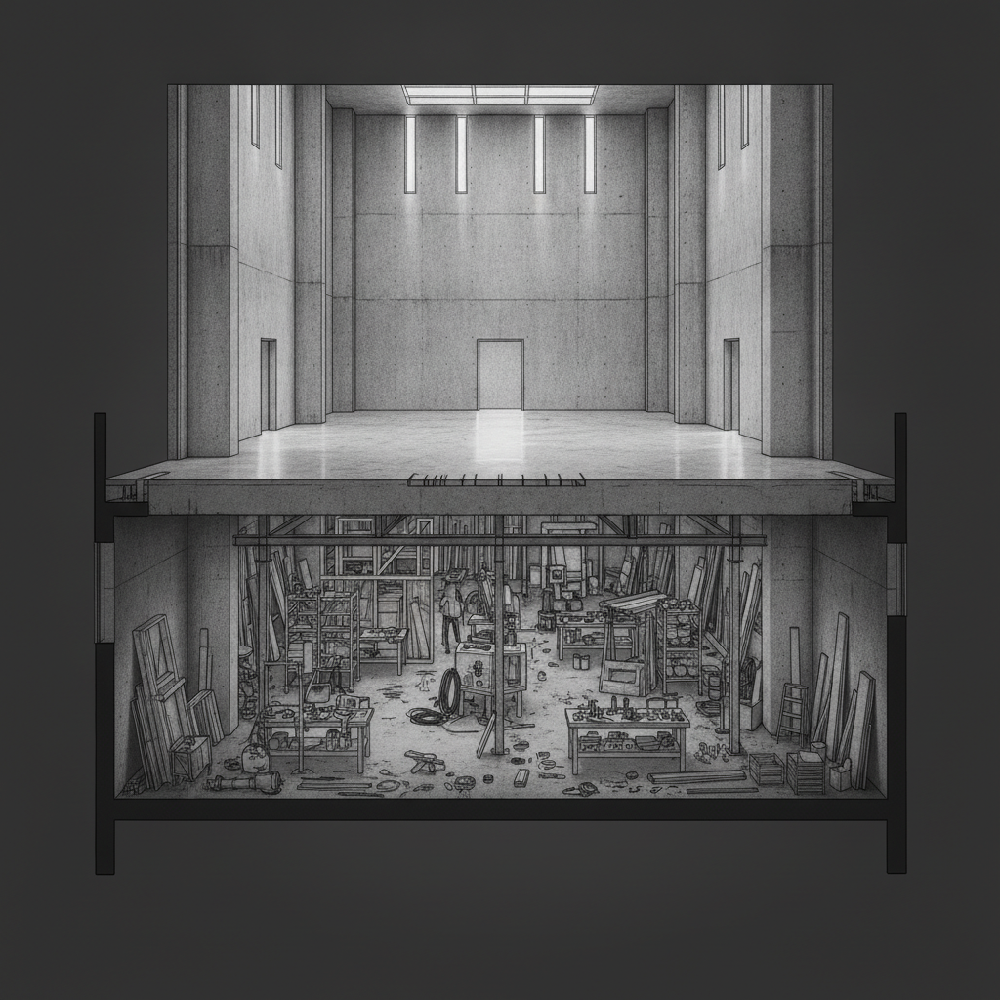

Drafted: 2026-06-17
OS Pillar: Operating Model OS
Quarterly Theme: The Machine
Subject: The reason your team escalates (and what to write instead)
Preheader: Empowerment is not a speech. It is an artifact.
Insight summary: Most middle-market companies fail at innovation not because they lack ideas, but because they built innovation as a separate function instead of embedding problem-solving authority into the people who actually do the work.
This week: every pillar tells the same story. The work that scales is done by the people closest to the problem, when the system lets them act.
The most expensive line item in this year's mid-market budget is the innovation function that did not exist three years ago. Chief Executive's June survey found CEOs hungry for growth from new categories, while most revenue still comes from products offered five years ago. The hires were made. The ROI did not arrive. The diagnosis is rarely the team. It is the operating model that quarantined innovation into a department, away from the people who know what is broken.
Your team brings you the problem. You wanted them to bring the solution. You said so in the all-hands. Nothing changed.
The instinct is to call this a capability issue, or a confidence issue, or a culture issue. It is none of those. It is an operating model issue. Your frontline has been trained, by every prior incentive in the building, to escalate rather than solve. Escalation is never punished. A solution that breaks something gets reviewed. Under those rules, escalation is rational.
You told them to solve. You did not change the rules that made escalation rational.
Operating Model OS treats empowerment as an artifact, not a speech. Three pieces have to be in place before the rule changes for real.
First: permission, written down. When you see X, you decide. You do not ask. The boundary is named. The spend limit, the customer tier, the time window. This is The Decision Rule in its working form: trigger, test, boundary. Without the artifact, your stated trust is a memory the team cannot rely on.
Second: skill. You cannot tell someone trained for ten years to escalate that they now decide, and assume the muscle is there. Walk them through three real examples of how you would have decided. Name the test you applied. The test is more transferable than the answer.
Third: visible protection. The first time a team member makes a call inside the rule, and it goes badly, you stand behind it in public. If the team sees the protection, the rule lives. If they see you correct in public after a rule-aligned call goes badly, the speech was always a speech.
Most owners install the first piece and skip the other two. The decision rule appears in a document. Nobody acts on it. The owner reads this as a culture problem and considers replacing the team. The team is doing exactly what they have always done: waiting until they see whether the new rule is real.
Pick one recurring problem your team escalated to you in the last thirty days. Write the trigger, test, and boundary on a single page. Hand it to the person closest to the work. Tell them, by name, that this decision is theirs from now on. Then wait. The next time it lands, watch what they do. The first call inside the rule is the one that matters. How you respond to it is the rule.
Lundberg Family Farms was founded in 1937 when Albert and Frances Lundberg left Nebraska for Northern California with four young sons, a Farmall tractor, and a Chevy one-ton truck. The company now operates with a non-family CEO and a fourth generation of family owners stepping into ownership rather than operations, with a continued commitment to regenerative agriculture.
The structural choice is the part worth studying. The family did not install a fourth-generation operator. The operators are now non-family. The family holds the seat the company cannot recruit for, which is ownership, identity, and generational memory. The company hires for the seat it can.
For a US-based corridor owner at $5M to $100M, the implication is direct. If your succession plan assumes the next generation runs operations, you have set up two parallel transitions: ownership and operating capability. Most families cannot afford to lose on both. Naming which seat the family will hold protects the other.
Claude (or ChatGPT) - A general-purpose AI assistant. The bottleneck in writing a Decision Rule is not the writing. It is translating how you decide in your head into language your team can apply without you. Record yourself walking through your last three escalations. Paste the transcript. Ask for trigger, test, and boundary. First draft in ten minutes. claude.ai
Watch for this week: how many problems land on your desk that, by your own stated rules, should not have. Keep a count by Friday. If the same person escalates the same type of problem twice, the rule has not landed yet, and the second escalation is the diagnostic, not the first. The fix is rarely repeating the speech. The fix is making the rule visible in writing.
If something in this issue landed, reply - I read every response.
If this is useful to someone in your network, forward it - it takes ten seconds and it's the highest compliment.
When you're ready to work together directly, here is how we start: [link]
Draft generated by the pipeline. Review and edit before sending.